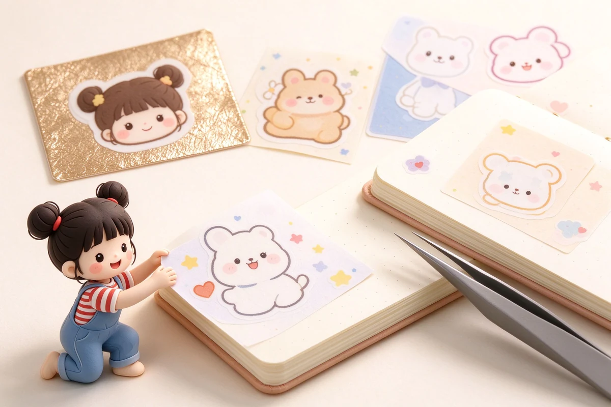
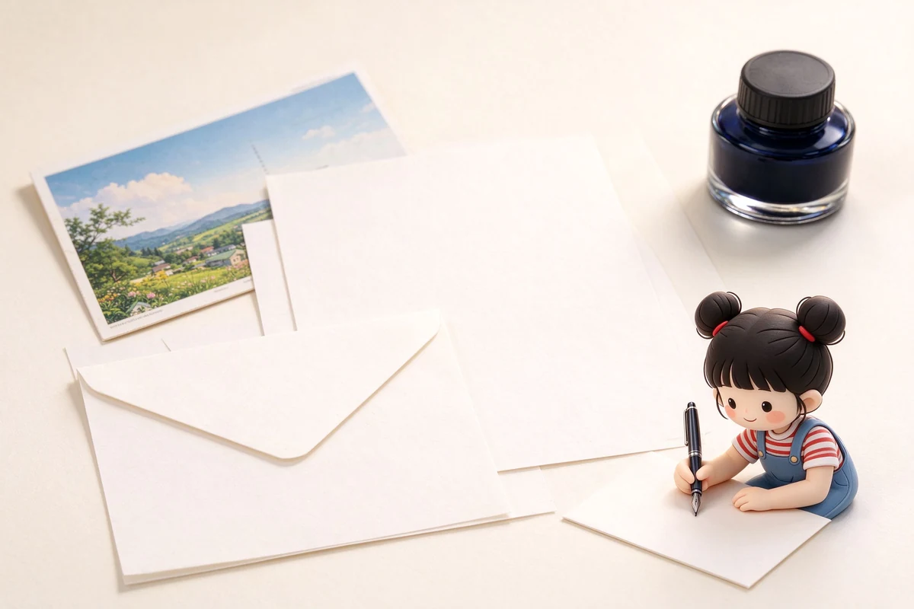

語意摘要：和紙膠帶以薄韌的日本和紙為基材，膠層較弱、可反覆撕貼，通常不留殘膠。挑選重點：看基材（和紙 vs 塑膠啞膜）、黏性（越黏越難撕）、寬度（15mm 適合邊框與索引、30mm 適合整面打底）、以及是否有現貨顏色能搭配手帳版面。貼紙面注意留膠，貼玻璃或牆面選低黏款。
和紙膠帶跟一般膠帶差在哪
紙膠帶最初是日本為了油漆遮蔽而做的「マスキングテープ」（遮蔽膠帶），後來 2006 年前後 kamoi（カモ井加工紙）把它從工具變成了文具，也就是大家熟知的 mt 系列。它的關鍵在基材：真的和紙膠帶用日本和紙當底材，薄、有纖維感、順著撕會有點毛邊，這正是它「好撕」的原因。
- 基材是紙不是塑膠，所以能用剪刀、甚至徒手就能撕。
- 膠層強度刻意做弱，撕下多半不留膠、也不太傷紙面。
- 因為是紙，碰到水會皺、會透，不是拿來封箱的那種強力用途。
為什麼有些紙膠帶撕下來會留殘膠
問題多半出在「基材」而不是品牌。有些便宜的「紙膠帶」其實是塑膠啞膜，表面做成紙的觸感，但底材不透氣，黏性又調強，貼久了膠跟紙黏在一起，一撕就把膠留在紙上。
判斷方法很簡單：把膠帶撕一小段，對折黏在自己手臂內側再撕下。真和紙膠帶幾乎無感、不留痕；塑膠啞膜款會明顯「咬住」皮膚，撕起來有刺痛感。買之前先用這個土方法試最準。
要貼在重要的筆記、書封或照片上之前，先貼在角落試一天，確認不留膠再正式使用——這是最便宜也最有效的避雷方式。
寬度、花色與黏性怎麼配
| 需求 | 建議選擇 |
|---|---|
| 筆記本邊框、頁籤、索引 | 15mm 細款，花色選素色或幾何，別用太重花 |
| 整面打底、分格、大面積裝飾 | 30mm 以上寬版，或兩條 15mm 並排貼 |
| 照片、明信片要黏又怕留膠 | 選標明「可重覆撕貼」「低黏」的款 |
| 貼玻璃、冰箱、白板 | 低黏款，貼前確認表面乾淨，避免日曬 |
紙膠帶最迷人的不是一卷有多漂亮，而是它能被撕下來重貼——犯錯的成本很低，這才是它適合新手的原因。
一次買幾卷才不會浪費
- 新手先買 2 到 3 卷 15mm 素色或低調幾何款，當邊框與分隔線用。
- 確認自己真的常用，再進 1 到 2 卷 30mm 寬版打底。
- 花色款（花朵、動物、復古圖樣）等到有明確主題再買，否則很容易堆著不開。
- 不要為了湊免運一次買十卷，紙膠帶會隨著時間老化、黏性衰退。
多數和紙膠帶價格落在每卷 30 到 150 元，貴的不是膠帶本身，而是花色與限量。想省錢就鎖定素色與常態款，限量合作款留給真的有在用的主題。
常見問題 FAQ
紙膠帶撕下來會留殘膠嗎？
真和紙膠帶通常不會，因為基材是透氣的和紙、膠層刻意做弱。會留殘膠的多半是塑膠啞膜仿紙膠帶或黏性被調強的款式，買前先用對折貼手臂的土方法測試最準。
紙膠帶能貼在牆上或玻璃上嗎？
可以，但要選標明「可重覆撕貼」或「低黏」的款式，並先清潔表面、避免日曬，否則時間久了膠一樣會殘留或脆化。
15mm 跟 30mm 的紙膠帶各適合做什麼？
15mm 細款適合邊框、頁籤、索引與分隔線；30mm 以上寬版適合整面打底、分格和大面積裝飾。新手建議先從 15mm 素色款入手。
資料來源與核實依據
- MT 官方（マスキングテープ mt 品牌與材質說明）（カモ井加工紙 kamoi）
- Wikipedia：Masking tape（遮蔽膠帶與和紙膠帶起源）（Wikipedia）
相關文章推薦

貼紙怎麼保存不翹邊？手帳貼紙材質、裝飾與收納
貼紙會翹邊，多半不是貼紙壞了，而是保存方法讓膠提早老化——濕氣跟紫外線是最大兇手。

信紙與明信片怎麼選？和紙信箋、筆友紙品與鋼筆適性
信紙跟明信片不是「能寫就好」——用鋼筆寫信，紙的克重跟塗布決定了你是享受書寫還是跟暈墨奮戰。

子彈筆記怎麼開始？手帳新手的符號、清單與月週計畫實作
子彈筆記的本體是一套符號速記法，不是華麗的畫面：任務寫一個點、事件畫個圈、想法用破折號，三個符號就能把一天記完。